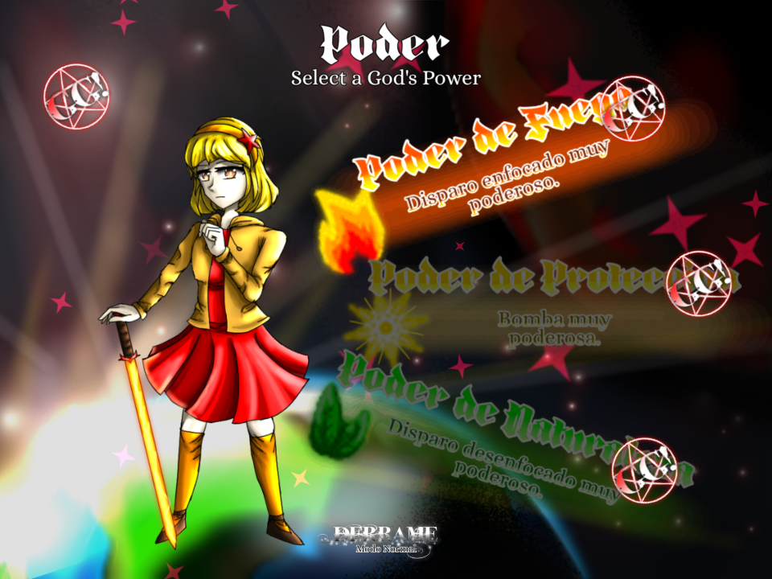
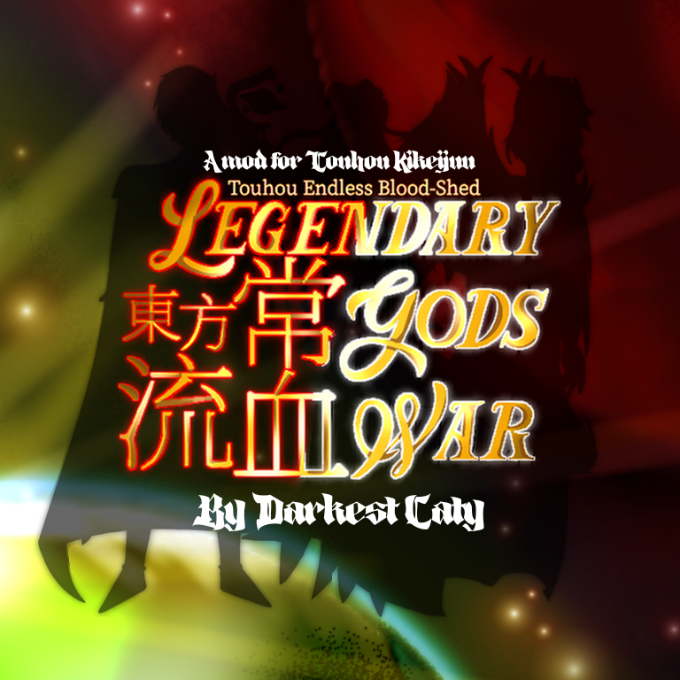

Legendary Gods War is a mod for Touhou 17 WBaWC - Willy Beast and Weakest Creature, it's development started since May 2025 and it was finally released on June 7th, 2026. This mod replaces everything from the original game, such as textures, bosses, patterns, dialogs and even stages.
LGW arrived specifically to showcase and tell a part of all the original lore created by the creator, a story that is based on showing an original fantasy mythology. So, LGW can be considered the only non-AU mod from the saga.
You can select a total of 3 characters:
And you can select between 3 different "God's power" which empowers one type of attack you can use in the game:
This works as the original game, just with another concept. The God's power you choose, it will empower its related demi-god form which you can access by collecting its corresponding boosters.
Tip: To be honest. Yarumi is the strongest.

But across the stages you can get special boosters, these look like big jewels and they are related with a boss as another God's power. The way you can get them is doing special actions:
The endless war of the New Earth against the Dark World seemed to be quiet. During that, two friends of the Nature God sweared to protect their friend and fight on his side, the Nature God's creativity made him be able to find a way to give them part of the Gods power. But they were still weak, so he sent them to train and then find their acceptance by the rest of the Gods team.
However, below that there was a deal that forbbidens it, the break of that deal will make it's enemy, the Goddess of Death, sumize their world in chaos. The demigoddess of fire from the future knew it, and risking breaking the rules of space-time, she set out to avoid that horrible fate that the current mental stability of the rest prevented them from seeing...
Maybe that would succed thanks to the support of the one who wants to break it... Underestimate the Shinigami is an error.
This mod replaces all of the tracks, including the title theme and game over theme.
Authors:
This is the mod with less variety on music authors and priorizes Sin's work because he kindly allowed the use of his covers.

Kanji: 東方常流血
Type: Mod, Full
Release: June 7th, 2026
Developers: Dark Caty
Dimension: New Era
Music: FalKKonE, Sin X Nad, Keygen Church
Credits: ZUN
Languaje: Neutral Spanish